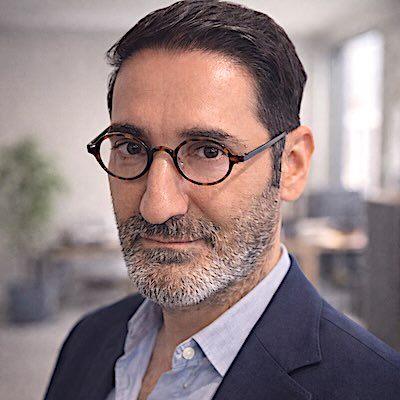

<!doctype html>
<!-- Gabarit des images d'aperçu (Open Graph, 1200 × 630) de tristan.pro.
     Rendu par scripts/apercus/rendre.py avec Chrome sans interface ; les
     paramètres arrivent dans le fragment d'URL (#{json}). Polices du site,
     auto-hébergées. Ne sert qu'à fabriquer les images, jamais affiché. -->
<html lang="fr">
<head>
<meta charset="utf-8">
<style>
  @font-face { font-family: 'Instrument Serif'; font-style: italic; src: url(../../assets/fonts/instrument-serif-italic-400-latin.woff2) format('woff2'); }
  @font-face { font-family: 'Instrument Serif'; font-style: italic; src: url(../../assets/fonts/instrument-serif-italic-400-latin-ext.woff2) format('woff2'); unicode-range: U+0100-024F, U+1E00-1EFF; }
  @font-face { font-family: 'Barlow'; font-weight: 300; src: url(../../assets/fonts/barlow-normal-300-latin.woff2) format('woff2'); }
  @font-face { font-family: 'Barlow'; font-weight: 400; src: url(../../assets/fonts/barlow-normal-400-latin.woff2) format('woff2'); }
  @font-face { font-family: 'Barlow'; font-weight: 500; src: url(../../assets/fonts/barlow-normal-500-latin.woff2) format('woff2'); }
  @font-face { font-family: 'DM Mono'; font-weight: 400; src: url(../../assets/fonts/dm-mono-normal-400-latin.woff2) format('woff2'); }
  * { box-sizing: border-box; margin: 0; padding: 0; }
  html, body { width: 1200px; height: 630px; overflow: hidden; background: #000; }
  body { position: relative; color: #fff; font-family: 'Barlow', sans-serif; -webkit-font-smoothing: antialiased; }
  .blob { position: absolute; border-radius: 50%; filter: blur(110px); }
  .b1 { width: 620px; height: 620px; background: #3b82f6; opacity: .34; left: -230px; top: -170px; }
  .b2 { width: 560px; height: 560px; background: #8b5cf6; opacity: .32; right: -190px; bottom: -230px; }
  .grain { position: absolute; inset: 0; opacity: .07; background-image: url("data:image/svg+xml,%3Csvg xmlns='http://www.w3.org/2000/svg' width='160' height='160'%3E%3Cfilter id='n'%3E%3CfeTurbulence type='fractalNoise' baseFrequency='.9' numOctaves='2' stitchTiles='stitch'/%3E%3C/filter%3E%3Crect width='100%25' height='100%25' filter='url(%23n)'/%3E%3C/svg%3E"); }
  .frame { position: absolute; inset: 0; padding: 64px 76px; display: flex; flex-direction: column; }
  .serif { font-family: 'Instrument Serif', serif; font-style: italic; font-weight: 400; letter-spacing: -0.01em; }
  .mono { font-family: 'DM Mono', monospace; text-transform: uppercase; letter-spacing: .2em; }
  .pill { align-self: flex-start; display: inline-flex; align-items: center; gap: 12px; padding: 11px 20px; border-radius: 999px; background: rgba(255,255,255,.06); border: 1px solid rgba(255,255,255,.16); font-size: 17px; color: rgba(255,255,255,.75); }
  .pill b { width: 9px; height: 9px; border-radius: 50%; background: var(--accent, #34d399); }
  .bas { margin-top: auto; }
  .foot { display: flex; justify-content: space-between; align-items: flex-end; font-size: 22px; color: rgba(255,255,255,.62); }
  .foot .site { font-family: 'Instrument Serif', serif; font-style: italic; font-size: 34px; color: #fff; }
  .rule { height: 1px; background: linear-gradient(90deg, rgba(255,255,255,.28), rgba(255,255,255,0)); margin: 0 0 22px; }

  /* Accueil, version typographique */
  .home h1 { font-size: 132px; line-height: .92; margin-top: 54px; }
  .home .tags { margin-top: 34px; font-size: 19px; color: rgba(255,255,255,.62); }
  /* Accueil, version portrait */
  .portrait { position: absolute; right: 70px; top: 50%; transform: translateY(-50%); width: 400px; height: 400px; border-radius: 50%; overflow: hidden; box-shadow: 0 0 0 1px rgba(255,255,255,.22), 0 0 90px rgba(99,102,241,.45); }
  .portrait img { width: 100%; height: 100%; object-fit: cover; filter: grayscale(1) contrast(1.12) brightness(1.04); }
  .portrait::after { content: ""; position: absolute; inset: 0; background: linear-gradient(150deg, #3b82f6 0%, #8b5cf6 100%); mix-blend-mode: color; opacity: .72; }
  .portrait::before { content: ""; position: absolute; inset: 0; z-index: 1; background: radial-gradient(circle at 50% 120%, rgba(0,0,0,.55), transparent 60%); }
  .homeb h1 { font-size: 104px; line-height: .95; margin-top: 46px; max-width: 640px; }
  .homeb .rule { max-width: 560px; }
  .homeb .tags { margin-top: 30px; font-size: 18px; line-height: 1.9; color: rgba(255,255,255,.62); max-width: 600px; }
  /* Article */
  .art h1 { font-size: 62px; line-height: 1.04; margin-top: 38px; max-width: 690px; }
  .stat { position: absolute; right: 76px; top: 168px; width: 300px; text-align: left; }
  .stat .n { font-family: 'Instrument Serif', serif; font-style: italic; font-size: 168px; line-height: .85; color: var(--accent); }
  .stat .l { margin-top: 18px; font-size: 22px; line-height: 1.3; color: rgba(255,255,255,.78); }
  /* Section (revue de presse…) */
  .sec h1 { font-size: 128px; line-height: .92; margin-top: 50px; }
  .sec .sub { margin-top: 28px; font-size: 30px; font-weight: 300; color: rgba(255,255,255,.8); max-width: 900px; line-height: 1.3; }
  /* ——— Sites voisins, chacun dans sa propre charte ——— */
  @font-face { font-family: 'Space Grotesk'; font-weight: 500 700; src: url(polices/space-grotesk-700-latin.woff2) format('woff2'); }
  @font-face { font-family: 'JetBrains Mono'; font-weight: 400; src: url(polices/jetbrains-mono-400-latin.woff2) format('woff2'); }
  body.autre .blob, body.autre .grain { display: none; }
  /* TMF Lab : noir, feu #ff5b2e, glace #46d8e0, Space Grotesk + JetBrains Mono */
  body.tmflab { background: #07080a; font-family: 'Space Grotesk', sans-serif; }
  .tl-glow { position: absolute; border-radius: 50%; filter: blur(120px); }
  .tl-g1 { width: 700px; height: 520px; background: #ff5b2e; opacity: .22; left: -220px; bottom: -300px; }
  .tl-g2 { width: 520px; height: 420px; background: #46d8e0; opacity: .10; right: -160px; top: -220px; }
  .tmflab .frame { padding: 58px 72px; }
  .tl-logo { font-size: 30px; font-weight: 700; letter-spacing: -0.02em; }
  .tl-logo span { font-weight: 500; color: #8e94a1; }
  .tl-kick { margin-top: 52px; font-family: 'JetBrains Mono', monospace; font-size: 16px; letter-spacing: .22em; text-transform: uppercase; color: #8e94a1; }
  .tmflab h1 { margin-top: 22px; font-size: 118px; line-height: .98; font-weight: 700; letter-spacing: -0.035em; }
  .tmflab h1 .l2 { background: linear-gradient(90deg, #ff5b2e 0%, #f08a3c 38%, #c9b26a 72%, #9fbf7c 100%); -webkit-background-clip: text; background-clip: text; color: transparent; }
  .tl-bas { margin-top: auto; display: flex; justify-content: space-between; align-items: flex-end; border-top: 1px solid #1e232c; padding-top: 22px; font-family: 'JetBrains Mono', monospace; font-size: 17px; letter-spacing: .08em; color: #8e94a1; }
  .tl-bas b { font-family: 'Space Grotesk', sans-serif; font-size: 30px; letter-spacing: -0.01em; color: #e9eaee; font-weight: 700; }
  /* egoblog : nuit #0d0c0b, crème #f2ede4, or #c9a227, Georgia */
  body.egoblog { background: #0d0c0b; color: #f2ede4; font-family: Georgia, 'Iowan Old Style', serif; }
  .eg-halo { position: absolute; width: 900px; height: 500px; left: 150px; top: -260px; border-radius: 50%; background: #c9a227; opacity: .09; filter: blur(130px); }
  .egoblog .frame { align-items: center; text-align: center; padding: 104px 90px 56px; }
  .egoblog h1 { font-size: 150px; line-height: 1; font-weight: 400; letter-spacing: -0.02em; margin-top: 18px; }
  .egoblog h1 span { color: #c9a227; }
  .eg-sous { margin-top: 26px; font-size: 30px; font-style: italic; color: #cfc8bb; max-width: 900px; line-height: 1.3; }
  .eg-chiffres { margin-top: auto; width: 100%; display: flex; justify-content: center; gap: 90px; border-top: 1px solid #2a2724; padding-top: 26px; }
  .eg-chiffres div { font-size: 40px; }
  .eg-chiffres small { display: block; margin-top: 6px; font-family: -apple-system, 'Helvetica Neue', sans-serif; font-size: 14px; letter-spacing: .24em; text-transform: uppercase; color: #8d867a; }
  /* Projet avec visuel de fond (modèle « projet ») */
  .fond { position: absolute; inset: 0; background-size: cover; background-position: center; }
  .voile { position: absolute; inset: 0; }
  .fond { background-repeat: no-repeat; }
  /* Capture présentée comme une carte flottante à droite */
  .cap { position: absolute; right: 70px; top: 62px; width: 440px; height: 420px; border-radius: 22px; overflow: hidden; transform: rotate(2.2deg); box-shadow: 0 0 0 1px rgba(255,255,255,.14), 0 30px 80px rgba(0,0,0,.7), 0 0 90px color-mix(in srgb, var(--accent) 35%, transparent); }
  .cap img { display: block; width: 100%; }
  .cap::after { content: ""; position: absolute; inset: 0; background: linear-gradient(180deg, rgba(0,0,0,0) 70%, rgba(0,0,0,.55) 100%); }
  body.projet.avec-cap h1 { max-width: 600px; font-size: 84px; }
  body.projet.avec-cap .accroche { max-width: 560px; }
  body.projet h1 { font-size: 96px; line-height: .98; margin-top: 30px; max-width: 760px; }
  body.projet .accroche { margin-top: 24px; font-size: 27px; font-weight: 300; line-height: 1.32; color: rgba(255,255,255,.86); max-width: 640px; }
  body.projet.grotesk h1 { font-family: 'Space Grotesk', sans-serif; font-style: normal; font-weight: 700; letter-spacing: -0.035em; font-size: 76px; max-width: 700px; }
  body.projet.grotesk .accroche { font-family: 'Space Grotesk', sans-serif; font-weight: 500; font-size: 26px; }
  body.projet.grotesk .mono, body.projet.grotesk .foot { font-family: 'JetBrains Mono', monospace; }
  body.projet.grotesk .foot .site { font-family: 'Space Grotesk', sans-serif; font-style: normal; font-weight: 700; font-size: 30px; }
</style>
</head>
<body>
<div class="blob b1"></div><div class="blob b2"></div><div class="grain"></div>
<div class="frame" id="f"></div>
<script>
  const p = JSON.parse(decodeURIComponent(location.hash.slice(1) || "{}"));
  const esc = s => String(s || "").replace(/&/g, "&amp;").replace(/</g, "&lt;");
  // Espaces insécables de la typographie française.
  const nb = s => esc(s).replace(/ ([%:;?!»])/g, " $1").replace(/« /g, "« ");
  const f = document.getElementById("f");
  if (p.accent) document.body.style.setProperty("--accent", p.accent);
  const foot = (left) => `<div class="bas"><div class="rule"></div><div class="foot"><span>${nb(left || "Tristan Mendès France")}</span><span class="site">tristan.pro</span></div></div>`;
  if (p.modele === "accueil") {
    f.className = "frame home";
    f.innerHTML = `<span class="pill"><b></b>Disponible pour confs & interviews</span>
      <h1 class="serif">Tristan<br>Mendès France</h1>
      <div class="tags mono">Cultures numériques · Complotisme · Radicalités en ligne</div>
      ${foot("Complorama · Conspiracy Watch · Conférences")}`;
  } else if (p.modele === "accueil-portrait") {
    f.className = "frame homeb";
    document.body.insertAdjacentHTML("beforeend", `<div class="portrait"></div>`);
    f.innerHTML = `<span class="pill"><b></b>Disponible pour confs & interviews</span>
      <h1 class="serif">Tristan<br>Mendès France</h1>
      <div class="tags mono">Cultures numériques<br>Complotisme & radicalités en ligne</div>
      ${foot("Complorama · Conspiracy Watch · Conférences")}`;
  } else if (p.modele === "article") {
    f.className = "frame art";
    f.innerHTML = `<span class="pill mono" style="font-size:15px"><b></b>${esc(p.rubrique)}</span>
      <h1 class="serif">${nb(p.titre)}</h1>
      ${foot(p.pied)}`;
    if (p.chiffre) document.body.insertAdjacentHTML("beforeend", `<div class="stat"><div class="n">${nb(p.chiffre)}</div><div class="l">${nb(p.legende)}</div></div>`);
  } else if (p.modele === "projet") {
    document.body.classList.add("autre", "projet");
    if (p.police === "grotesk") document.body.classList.add("grotesk");
    if (p.accent) document.body.style.setProperty("--accent", p.accent);
    document.body.insertAdjacentHTML("afterbegin", `${p.fond ? `<div class="fond" style="background-image:url('${p.fond}');background-position:${p.position || "center"};${p.taille ? "background-size:" + p.taille + ";" : ""}${p.filtre ? "filter:" + p.filtre : ""}"></div>` : ""}<div class="voile" style="background:${p.voile || "linear-gradient(90deg,rgba(0,0,0,.92) 0%,rgba(0,0,0,.78) 45%,rgba(0,0,0,.15) 100%)"}"></div>`);
    if (p.capture) {
      document.body.classList.add("avec-cap");
      document.body.insertAdjacentHTML("beforeend", `<div class="cap"></div>`);
    }
    f.className = "frame";
    f.innerHTML = `<span class="pill mono" style="font-size:15px"><b></b>${esc(p.rubrique)}</span>
      <h1 class="${p.police === "grotesk" ? "" : "serif"}">${nb(p.titre)}</h1>
      <div class="accroche">${nb(p.accroche)}</div>
      <div class="bas"><div class="rule"></div><div class="foot"><span>${nb(p.pied || "Tristan Mendès France")}</span><span class="site">${esc(p.site || "tristan.pro")}</span></div></div>`;
  } else if (p.modele === "tmflab") {
    document.body.classList.add("autre", "tmflab");
    document.body.insertAdjacentHTML("afterbegin", `<div class="tl-glow tl-g1"></div><div class="tl-glow tl-g2"></div>`);
    f.innerHTML = `<div class="tl-logo">tmflab<span>.tech</span></div>
      <div class="tl-kick">${esc(p.rubrique || "TMF Lab · atelier numérique · Tristan Mendès France")}</div>
      <h1>${nb(p.ligne1 || "Je ne code pas.")}<br><span class="l2">${nb(p.ligne2 || "J’expérimente.")}</span></h1>
      <div class="tl-bas"><span>${nb(p.pied || "")}</span><b>Tristan Mendès France</b></div>`;
  } else if (p.modele === "egoblog") {
    document.body.classList.add("autre", "egoblog");
    document.body.insertAdjacentHTML("afterbegin", `<div class="eg-halo"></div>`);
    f.innerHTML = `<h1>egoblog<span>.net</span></h1>
      <div class="eg-sous">${nb(p.sous_titre)}</div>
      <div class="eg-chiffres">${(p.chiffres || []).map(([n, l]) => `<div>${esc(n)}<small>${esc(l)}</small></div>`).join("")}</div>`;
  } else {
    f.className = "frame sec";
    f.innerHTML = `<span class="pill mono" style="font-size:15px"><b></b>${esc(p.rubrique)}</span>
      <h1 class="serif">${nb(p.titre)}</h1>
      <div class="sub">${nb(p.sous_titre)}</div>
      ${foot(p.pied)}`;
  }
  document.fonts.ready.then(() => { document.title = "pret"; });
</script>
</body>
</html>
